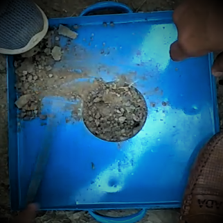

1. Measure the internal dimensions (diameter and height) of the calibrating can and compute its internal volume(Vc).
2. Fill the sand pouring cylinder(SPC) with sand with 1 cm top clearance and find its weight(W1).
3. Place the SPC concentrically on top of the calibrating can. Open the slit to allow the sand to run down until the sand flow stops by itself. Now close the slit and find the weight of the SPC with the remaining sand(W3).
>
4. Place the SPC on a glass plate, open the slit by operating the valve and allow the sand to run down. Now,close the slit and measure the weight of the sand required to fill the cone(W2).
5. Place the tray with a central hole over the portion of the soil to be tested.

6. Excavate a pit into the ground, through the hole in the plate(same as the height of the calibrating can).
7. Collect the excavated soil into the tray and weigh the soil (W) and determine the moisture content of the excavated soil.
8.Place the SPC, with sand having the latest weight of W1, over the pit so that the base of the cylinder covers the pit concentrically.
9. Open the slit of the SPC and allow the sand to run into the pit freely, till there is no downward movement of sand level in the SPC and then close the slit.
10. Find the weight of the SPC with the remaining sand (W4).